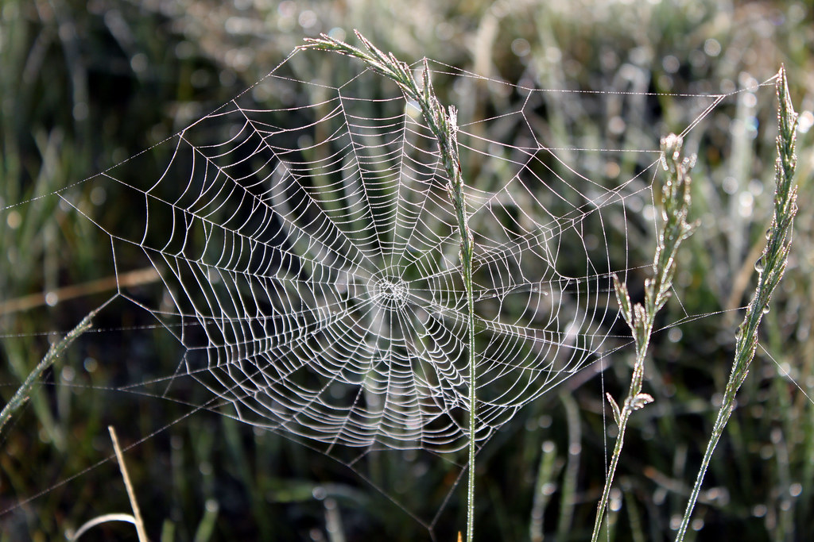

Extend Yourself - Makey Makey: House of Shapes
 Make a 3D House
Make a 3D House
Make your house using 3D shapes this time. You can add additions to your home if you would like. (dog & doghouse, LED lights, yard, doorbell) Create events for these new additions in Scratch. You may want to use cardboard to make the 3D frame of your house and then use copper tape to make it conductive.
Use Shapes to Make a Simple Machine
Think about how shapes relate to simple machines; what shapes do you commonly see in them? Choose at least one simple machine to create using your consumables and record a video explaining how it works.
Design a Playground
Use the other consumables contained in the Makey Makey Accessory Kit: pie tin, chopsticks, popsicle sticks, etc. to create an interactive playground that contains the same shapes using your Makey Makey and Scratch programming skills.

Shapes in Animal Homes
Shapes exist in human architecture, but they also exist in nature’s architecture. Do a nature walk (outside or virtually) and write down shapes that you observe. Do you notice any 2D shapes in animal homes? Do any shapes occur more than occurs?
